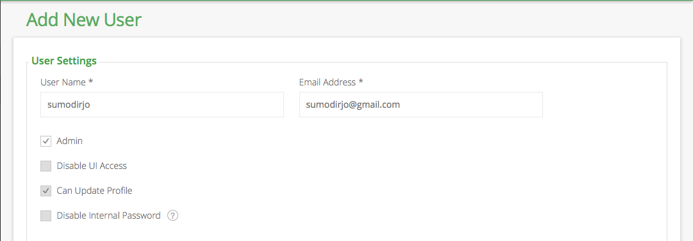

What is Artifactory?
Artifactory is a repository manager created by JFrog. A repository manager is a dedicated server application designed to manage binary components for the application that we build.
Using a repository manager is one of the best practice for using any build tools, whether we use maven, Gradle, or Ant.
Several benefits of using a repository manager accroding to the maven website:
- Reduce number of downloads from remote repositories, this can save not only bandwidth but also time.
- Improve build stability since you are less dependent on external repositories.
- Increase performance for interaction with remote SNAPSHOT repositories.
- Potential for control consumed and provided artifacts.
- Create a central storage and access to artifacts and metadata that can be used by another developer, even another projects. QA and operations team also get the benefits by using the same binary.
- Become effective platform for exchanging binary artifact within and beyond your organization without the need of building the source.
Sharing source code of the components might seems easier and can easily be done but with large number of developers and projects it will be difficult to track which application use which version of components since the component source code can also be updated by the developers of specific project.
Using an artifact repository manager will make sure which (binary) component is being used on an application.
Several features of JFrog Artifactory :
- Reliability : As a local proxy to the outside world, Artifactory guarantees consistent access to the components needed by your build tools.
- Efficiency : Remote artifacts are cached locally for reuse, so that you don’t have to download them over and over again.
- Security : Advanced security features give you control over who can access your artifacts, and where they can deploy them.
- Stability : Supports large load bursts with extremely high concurrency and unmatched data integrity.
- Automation :Automate all aspects of artifact management using a powerful REST API.
There are SaaS version and also self hosted version of artifactory.
The self-hosted version divided into three versions: OSS, Pro and Enterprise. The Pro and Enterprise versions have features that is not available on OSS version. Features that supported on Artifactory OSS versions are:
- Proxy and Cache Remote Repository Artifacts
- Deploy Artifacts via the UI
- Deploy Artifacts v=via REST/HTTP
- Bulk Artifact Deployment (from Archive)
- Intuitive Slick Web UI
- LDAP Authentication
- Role Based Authorization
- Include/exclude patterns for Stored Artifacts
- Search by Name, Class, Module Info, XPath Values
- UI-based Move/Copy/Delete
- Smart "No-Duplicates" Storage
- Incremental and Historical Backup Services
- Integration With Leading CI-servers: Jenkins / Hudson, Bamboo, MSBuild, and TeamCity.
- Artifactory Query Language
Previously we learned how-to install Apache Archiva on Ubuntu 14.04. In this tutorial we'll learn how-to install and configure Artifactory open source edition on Ubuntu 14.04.
Components
For this setup we will use these components:
- Oracle JDK 8. Artifactory is Java software, so we will use Oracle Java 8 to run Artifactory.
- MySQL 5.6. Artifactory comes with built in Derby database. It's not a strict requirement but highly recommended to use external database. Artifactory support MySQL, PostgreSQL, Oracle and MSSQL Server. In this tutorial we'll setup MySQL server as external database but on the same server with Artifactory. When needed in the future you can easily migrate the database to dedicated MySQL instance.
- Nginx. Artifactory run on top of Tomcat as application server. We can access artifactory directly but we will use Nginx as reverse proxy for Tomcat / Artifactory. We will also setup SSL on Nginx so SSL termination will happen on Nginx instead of on Tomcat.
Update Base System
This tutorial assume we have clean minimalist install of Ubuntu Server 14.04 Trusty Tahr.
Before we install JFrog Artifactory and the components needed, let's update the base system by running command below
$ sudo apt-get update
$ sudo apt-get -y upgrade
Installing Oracle JDK 8
Now, let's install Java Development Kit 8. We will use Oracle JDK instead of OpenJDK version of JDK 8.
We'll also use webupd8team ppa repository instead of installing JDK manually.
Add webupd8team PPA repository.
$ sudo add-apt-repository ppa:webupd8team/java Oracle Java (JDK) Installer (automatically downloads and installs Oracle JDK7 / JDK8 / JDK9). There are no actual Java files in this PPA.More info (and Ubuntu installation instructions): - for Oracle Java 7: http://www.webupd8.org/2012/01/install-oracle-java-jdk-7-in-ubuntu-via.html - for Oracle Java 8: http://www.webupd8.org/2012/09/install-oracle-java-8-in-ubuntu-via-ppa.htmlDebian installation instructions: - Oracle Java 7: http://www.webupd8.org/2012/06/how-to-install-oracle-java-7-in-debian.html - Oracle Java 8: http://www.webupd8.org/2014/03/how-to-install-oracle-java-8-in-debian.htmlImportant!!! For now, you should continue to use Java 8 because Oracle Java 9 is available as an early access release (it should be released in 2016)! You should only use Oracle Java 9 if you explicitly need it, because it may contain bugs and it might not include the latest security patches! Also, some Java options were removed in JDK9, so you may encounter issues with various Java apps. More information and installation instructions (Ubuntu / Linux Mint / Debian): http://www.webupd8.org/2015/02/install-oracle-java-9-in-ubuntu-linux.html More info: https://launchpad.net/~webupd8team/+archive/ubuntu/java Press [ENTER] to continue or ctrl-c to cancel adding it
gpg: keyring `/tmp/tmpaz5gxp9d/secring.gpg' created gpg: keyring `/tmp/tmpaz5gxp9d/pubring.gpg' created gpg: requesting key EEA14886 from hkp server keyserver.ubuntu.com gpg: /tmp/tmpaz5gxp9d/trustdb.gpg: trustdb created gpg: key EEA14886: public key "Launchpad VLC" imported gpg: no ultimately trusted keys found gpg: Total number processed: 1 gpg: imported: 1 (RSA: 1) OK
Update repository metadata.
$ sudo apt-get update
Install Oracle JDK 8.
$ sudo apt-get -y install oracle-java8-installer
Package configuration. Choose OK.
Accepting Oracle Binary Code Lisence Terms. ChooseYesCheck Java version by running command below.
$ java -version
java version "1.8.0_91"
Java(TM) SE Runtime Environment (build 1.8.0_91-b14)
Java HotSpot(TM) 64-Bit Server VM (build 25.91-b14, mixed mode)
Install MySQL 5.6
We will install and use MySQL 5.6 as database for Artifactory. We will use MySQL Server 5.6
$ sudo apt-get -y install mysql-server-5.6
We need to setup MySQL root password. Please
Verify root password.
Securing the MySQL Installation
We will secure MySQL installation by running mysql_secure_installation.
Enter the root password that we set on installation
$ mysql_secure_installation NOTE: RUNNING ALL PARTS OF THIS SCRIPT IS RECOMMENDED FOR ALL MySQL SERVERS IN PRODUCTION USE! PLEASE READ EACH STEP CAREFULLY!In order to log into MySQL to secure it, we'll need the current password for the root user. If you've just installed MySQL, and you haven't set the root password yet, the password will be blank, so you should just press enter here.
Enter current password for root (enter for none): OK, successfully used password, moving on...
Since we already have root password set, answer this part with n
Setting the root password ensures that nobody can log into the MySQL root user without the proper authorisation.You already have a root password set, so you can safely answer 'n'.
Change the root password? [Y/n] n ... skipping.
Remove anonymous user to improve security.
This will make sure people or application have correct username and
password to login to MySQL. Answer with Y
By default, a MySQL installation has an anonymous user, allowing anyone
to log into MySQL without having to have a user account created for
them. This is intended only for testing, and to make the installation
go a bit smoother. You should remove them before moving into a
production environment.Remove anonymous users? [Y/n] Y
... Success!We also want remove root login from remote machine. Answer with Y
Normally, root should only be allowed to connect from 'localhost'. This ensures that someone cannot guess at the root password from the network.
Disallow root login remotely? [Y/n] Y ... Success!
Previously the test database created automatically by MySQL installation, but MySQL 5.6 does not create test database. We can still choose Y, it will throw error but that's fine.
By default, MySQL comes with a database named 'test' that anyone can access. This is also intended only for testing, and should be removed before moving into a production environment.
Remove test database and access to it? [Y/n] Y - Dropping test database... ERROR 1008 (HY000) at line 1: Can't drop database 'test'; database doesn't exist ... Failed! Not critical, keep moving... - Removing privileges on test database... ... Success!
The last step is to reload MySQL privilege table.
Reloading the privilege tables will ensure that all changes made so far will take effect immediately.Reload privilege tables now? [Y/n] Y ... Success!All done! If you've completed all of the above steps, your MySQL installation should now be secure.Thanks for using MySQL!
Cleaning up...
Create a Database for Artifactory
Now we have a secure MySQL installation, it's time to create database and user for Artifactory itself.
Login to MySQL using root credentials
$ mysql -u root -p Enter password: Welcome to the MySQL monitor. Commands end with ; or g. Your MySQL connection id is 58 Server version: 5.6.30-0ubuntu0.14.04.1 (Ubuntu)Copyright (c) 2000, 2016, Oracle and/or its affiliates. All rights reserved.Oracle is a registered trademark of Oracle Corporation and/or its affiliates. Other names may be trademarks of their respective owners.Type 'help;' or 'h' for help. Type 'c' to clear the current input statement.
mysql>
Create new database named artdb using the command below
mysql> CREATE DATABASE artdb;
Query OK, 1 row affected (0.00 sec)
Create a User for Artifactory
The database for Artifactory is ready, let's create username and password and grant privileges to artifactory database.
Don't forget to FLUSH PRIVILEGES so that the privileges table will be reloaded by MySQL and we can use new credential.
Don't forget to change the password verysecret below with better password.
mysql> GRANT SELECT, INSERT, UPDATE, DELETE, CREATE, DROP, INDEX, ALTER ON `artdb`.* TO 'artifactory'@'localhost' IDENTIFIED BY 'verysecret'; Query OK, 0 rows affected (0.00 sec)
mysql> FLUSH PRIVILEGES; Query OK, 0 rows affected (0.00 sec)
Exit from MySQL console by typing q
mysql> q
Install Nginx
We will install Nginx from nginx.org repository instead of from ubuntu repository. The reason is that nginx.org repository provide newer version of nginx.
First let's add Nginx.org package signing key. We add this key so apt can verify that the packages that we download from nginx repository is not tampered on the way to our server.
$ wget -c -O- http://nginx.org/keys/nginx_signing.key | sudo apt-key add -
Add nginx.org Repository
$ echo "deb http://nginx.org/packages/ubuntu/ trusty nginx" | sudo tee -a /etc/apt/sources.list.d/nginx.list > /dev/null
Update apt metadata so that it know the contents of Nginx.org repository and install Nginx.
$ sudo apt-get update
$ sudo apt-get -y install nginx
Now we have nginx installed, we can check it by checking the status of the service :
$ sudo service nginx status
Configure Nginx Sites For Artifactory
In this tutorial we'll learn how to configure Nginx to serve as an http only proxy and https only proxy.
The configuration directory structure created by nginx package from nginx.org
repository is a little bit different with the configuration of the
Nginx package from Ubuntu repository. We will reconfigure Nginx
configuration directory to make it easier to enable and disable site
configuration.
Create two new directories named sites-available and sites-enabled with commands below:
$ sudo mkdir /etc/nginx/sites-available
$ sudo mkdir /etc/nginx/sites-enabled
open /etc/nginx/nginx.conf find line:
include /etc/nginx/conf.d/*.conf;
replace with
include /etc/nginx/sites-enabled/*.conf;
Remove contents of /etc/nginx/conf.d
$ sudo rm -f /etc/nginx/conf.d/*
Now we are ready to configure Artifactory site.
HTTP Only Configuration
Create a file /etc/nginx/sites-available/artifactory.conf with contents below. You need to change server_name line below with the domain name that you plan to use for Artifactory.
server { listen 80 default_server; listen [::]:80 default_server;server_name artifactory.exampleserver.xyz; root /usr/share/nginx/artifactory;proxy_set_header X-Forwarded-For $proxy_add_x_forwarded_for; proxy_set_header Host $host; proxy_set_header X-Forwarded-Proto $scheme;location / { proxy_pass http://localhost:8081; }
}
Enable the configuration by creating symbolic link:
$ sudo ln -sf /etc/nginx/sites-available/artifactory.conf /etc/nginx/sites-enabled/artifactory.conf
Now restart Nginx
$ sudo service nginx restart
Nginx is read to work as reverse proxy. You will still get error when opening the sites since Artifactory is not ready yet.
HTTPS Only Configuration
If you already follow the configuration above you can skip this section, but if you want to serve Artifactory only via https port you can follow this section.
The configuration below will make Nginx serve both on http port and https port. When a request comes to the http port it will be redirected to https port.
We assume that you already have an ssl certificate and the private key pair. When using this configuration you need to change server_name ssl_certificate and ssl_certificate_key lines below.
Before creating the configuration file. Let's create new folder to put ssl certificate.
$ sudo mkdir /etc/nginx/ssl
Create a new configuration file /etc/nginx/sites-available/artifactory-ssl.conf with the content below:
server { listen 80 default_server; listen [::]:80 default_server;# Redirect all HTTP requests to HTTPS with a 301 Moved Permanently response. return 301 https://$host$request_uri; }server { listen 443 ssl http2; listen [::]:443 ssl http2;server_name artifactory.exampleserver.xyz; root /usr/share/nginx/artifactory;proxy_set_header X-Forwarded-For $proxy_add_x_forwarded_for; proxy_set_header Host $host; proxy_set_header X-Forwarded-Proto $scheme;# certs sent to the client in SERVER HELLO are concatenated in ssl_certificate ssl_certificate /etc/nginx/ssl/artifactory.exampleserver.xyz.crt; ssl_certificate_key /etc/nginx/ssl/artifactory.exampleserver.xyz.key;ssl_session_timeout 1d; ssl_session_cache shared:SSL:50m; ssl_session_tickets off;# intermediate configuration. tweak to your needs. ssl_protocols TLSv1 TLSv1.1 TLSv1.2; ssl_ciphers 'ECDHE-ECDSA-CHACHA20-POLY1305:ECDHE-RSA-CHACHA20-POLY1305:ECDHE-ECDSA-AES128-GCM-SHA256:ECDHE-RSA-AES128-GCM-SHA256:ECDHE-ECDSA-AES256-GCM-SHA384:ECDHE-RSA-AES256-GCM-SHA384:DHE-RSA-AES128-GCM-SHA256:DHE-RSA-AES256-GCM-SHA384:ECDHE-ECDSA-AES128-SHA256:ECDHE-RSA-AES128-SHA256:ECDHE-ECDSA-AES128-SHA:ECDHE-RSA-AES256-SHA384:ECDHE-RSA-AES128-SHA:ECDHE-ECDSA-AES256-SHA384:ECDHE-ECDSA-AES256-SHA:ECDHE-RSA-AES256-SHA:DHE-RSA-AES128-SHA256:DHE-RSA-AES128-SHA:DHE-RSA-AES256-SHA256:DHE-RSA-AES256-SHA:ECDHE-ECDSA-DES-CBC3-SHA:ECDHE-RSA-DES-CBC3-SHA:EDH-RSA-DES-CBC3-SHA:AES128-GCM-SHA256:AES256-GCM-SHA384:AES128-SHA256:AES256-SHA256:AES128-SHA:AES256-SHA:DES-CBC3-SHA:!DSS'; ssl_prefer_server_ciphers on;# HSTS (ngx_http_headers_module is required) (15768000 seconds = 6 months) add_header Strict-Transport-Security max-age=15768000;
location / { proxy_pass http://localhost:8081; } }
Enable the site by creating symbolic link using command below:
$ sudo ln -sf /etc/nginx/sites-available/artifactory-ssl.conf /etc/nginx-sites-enabled/artifactory-ssl.conf
Test Nginx configuration using comand below:
$ sudo service nginx configtest
nginx: the configuration file /etc/nginx/nginx.conf syntax is ok
nginx: configuration file /etc/nginx/nginx.conf test is successful
If the output is different than above, Nginx will show error message and show which file and line of the configuration still not correct.
Restart Nginx using command below:
$ sudo service nginx restart
Install JFrog Artifactory
Now we are ready to install JFrog Artifactory. Let's add JFrog repository key so apt can verify the packages downloaded from JFrog repository.
$ wget -c -O- "https://bintray.com/user/downloadSubjectPublicKey?username=jfrog" | sudo apt-key add -
Add JFrog repository to source list file. We put the repository configuration under /etc/apt/sources.list.d/ instead of putting the configuration on /etc/apt/sources.list to make it easier to manage the repository.
$ echo "deb https://bintray.com/artifact/download/jfrog/artifactory-debs trusty main" | sudo tee -a /etc/apt/sources.list.d/artifactory-oss.list
Update metadata and install JFrog Artifactory OSS.
sudo apt-get update
sudo apt-get -y install jfrog-artifactory-oss
Configure JFrog Artifactory Database
Even though we already create database and user for Artifactory we will use configure.mysql.sh
script that Artifactory provides. This will create MySQL user, create
database, and changing contents of Artifactory configuration files.
$ sudo /opt/jfrog/artifactory/bin/configure.mysql.sh######################################################## # Welcome to the Artifactory MySQL configuration tool! # ########################################################Please enter the MySQL server admin username [root]: root
Please enter the MySQL server admin password:
Enter MySQL root credential.
Enter username and password of artifactory user that we created earlier.
Please enter the Artifactory database username [artifactory]:
Please enter the Artifactory database password [password]: Creating the Artifactory MySQL user and database...
We can ignore the warning below. This is because we input the MySQL credentials via the command line.
Warning: Using a password on the command line interface can be insecure.
Warning: Using a password on the command line interface can be insecure.
Now the script will download MySQL JDBC connector. Choose Y, the script will automatically put the downloaded MySQL JDBC connector to /opt/jfrog/artifactory/tomcat/lib
No MySQL JDBC connector found. Download or copy one needed. Does the current server has access to the Internet? [Y/n]YDownloading mysql-connector-java-5.1.24.jar to /opt/jfrog/artifactory/tomcat/lib...
Configuration completed successfully! You can now start up the Artifactory service to use Artifactory with MySQL. Press enter to exit...
Press enter and artifactory is ready to be used.
Manually Configure Artifactory Database
We can also configure the database manuall without using configure.mysql.sh that Artifactory provides.
First let's download MySQL JDBC Connector.
$ wget -nv --timeout=30 -O /opt/jfrog/artifactory/tomcat/lib/mysql-connector-java-5.1.24.jar http://repo.jfrog.org/artifactory/remote-repos/mysql/mysql-connector-java/5.1.24/mysql-connector-java-5.1.24.jar 2>&1
Now open /etc/opt/jfrog/artifactory/storage.properties. On the sample below the database name is artdb and configured as part of url. You can change database name, username and password.
type=mysql
driver=com.mysql.jdbc.Driver
url=jdbc:mysql://localhost:3306/artdb?characterEncoding=UTF-8&elideSetAutoCommits=true
username=artifactory
password=verysecret
Starting Artifactory Service
Now we're ready to start Artifactory service. We can use command below:
$ sudo service artifactory start
Artifactory will take some time to start for the first
time. You can monitor the startup process by looking at log file.
Artifactory log file is located at /opt/jfrog/artifactory/tomcat/logs/catalina.out. I quote some lines below that I found interesting.
The Artifactory startup process will include creating database schema, default super user admin and also starting the application itself to listen on specific ports. Once we get INFO: Starting ProtocolHandler message, it means the application is ready.
INFO: Deploying configuration descriptor /opt/jfrog/artifactory/tomcat/conf/Catalina/localhost/artifactory.xml
[ARTIFACTORY] [INFO] Starting Artifactory [artifactory.home=/var/opt/jfrog/artifactory].
2016-07-07 20:54:17,204 [art-init] [INFO ] (o.a.w.s.ArtifactoryContextConfigListener:275) -
_ _ __ _ ____ _____ _____
/ | | (_)/ _| | | / __ / ____/ ____|
/ _ __| |_ _| |_ __ _ ___| |_ ___ _ __ _ _ | | | | (___| (___
/ / | '__| __| | _/ _` |/ __| __/ _ | '__| | | | | | | |___ \___
/ ____ | | | |_| | || (_| | (__| || (_) | | | |_| | | |__| |____) |___) |
/_/ __| __|_|_| __,_|___|_____/|_| __, | ____/|_____/_____/
Version: 4.9.0 __/ |
Revision: 40226 |___/
Artifactory Home: '/var/opt/jfrog/artifactory'2016-07-07 20:54:17,483 [art-init] [INFO ] (o.a.s.ArtifactoryApplicationContext:207) - Refreshing Artifactory: startup date [Thu Jul 07 20:54:17 EDT 2016]; root of context hierarchy
2016-07-07 20:54:24,706 [art-init] [INFO ] (o.a.s.d.DbServiceImpl:186) - Database: MySQL 5.6.30-0ubuntu0.14.04.1. Driver: MySQL-AB JDBC Driver mysql-connector-java-5.1.24 ( Revision: ${bzr.revision-id} )
2016-07-07 20:54:24,707 [art-init] [INFO ] (o.a.s.d.DbServiceImpl:188) - Connection URL: jdbc:mysql://localhost:3306/artdb?characterEncoding=UTF-8&elideSetAutoCommits=true
2016-07-07 20:54:24,794 [art-init] [INFO ] (o.a.s.d.DbServiceImpl:98) - ***Creating database schema***
...
2016-07-07 20:54:33,621 [art-init] [INFO ] (o.a.s.SecurityServiceImpl:2036) - Creating the default super user 'admin', since no admin user exists!
2016-07-07 20:54:33,644 [art-init] [INFO ] (o.a.s.SecurityServiceImpl:2063) - Creating the default anonymous user, since it does not exists!
2016-07-07 20:54:33,705 [art-init] [INFO ] (o.a.s.ArtifactoryApplicationContext:219) - Initializing org.artifactory.storage.binary.BinaryStoreManagerService
2016-07-07 20:54:33,777 [art-init] [INFO ] (o.a.s.ArtifactoryApplicationContext:404) - Artifactory application context is ready.
2016-07-07 20:54:33,781 [art-init] [INFO ] (o.a.w.s.ArtifactoryContextConfigListener:221) -
###########################################################
### Artifactory successfully started (16.585 seconds) ###
###########################################################Jul 07, 2016 8:56:15 PM org.apache.catalina.startup.HostConfig deployDescriptor
INFO: Deployment of configuration descriptor /opt/jfrog/artifactory/tomcat/conf/Catalina/localhost/artifactory.xml has finished in 124,179 ms
Jul 07, 2016 8:56:16 PM org.apache.catalina.startup.HostConfig deployDirectory
INFO: Deploying web application directory /opt/jfrog/artifactory/tomcat/webapps/ROOT
Jul 07, 2016 8:56:16 PM org.apache.catalina.startup.HostConfig deployDirectory
INFO: Deployment of web application directory /opt/jfrog/artifactory/tomcat/webapps/ROOT has finished in 112 ms
Jul 07, 2016 8:56:16 PM org.apache.coyote.AbstractProtocol start
INFO: Starting ProtocolHandler ["http-nio-8081"]
Jul 07, 2016 8:56:16 PM org.apache.coyote.AbstractProtocol start
INFO: Starting ProtocolHandler ["ajp-nio-8019"]To check Artifactory service status you can use two commands below:
$ sudo service artifactory status
Artifactory Tomcat running
or
$ sudo service artifactory check
Artifactory is running, on pid=9448
Accessing Artifactory
Now point your browser to Artifactory address. Artifactory will prompt us to login. Artifactory default admin username and password is admin / password
The main dashboard shows features supported by Artifactory. Some integration show Not Available which means it's not supported on OSS version.
Change Artifactory Admin Password
Click on Admin username on top right of dashboard. We will be asked our current password before we can change the password.
We can change default admin password to new password. If we use password manager it's likely that our password manager can generate random password.
We can also generate random password using GRC's Ultra High Security Password Generator
Make sure that our password contain both upper case and lower case, number, and special charaters. Click Save after changing the password.
Password successfully updated.
Accessing System Info
We can access System Info from sidebar menu Admin -> Advanced -> System Info
Accessing System Logs
We can access System Logs from sidebar menu Admin -> Advanced -> System Logs
Artifactory Maintenance Configuration
We can access the Artifactory maintenance configuration from sidebar menu Admin -> Advanced -> Maintenance. In this page we can configure garbage collection schedule, storage quota, cleanup unused cached artifacts and also clean up virtual repositories.
We can also clean up storage by compress internal database and prune unreferenced data.
Artifactory Storage Summary
We can access Artifactory storage summary from sidebar menu Admin -> Advanced -> Storage.
Backup Management
We can access Artifactory backup management from sidebar menu Admin -> Serices -> Backups.
Artifactory General Configuration
We can access Artifactory backup management from sidebar menu Admin -> Configuration -> General.
In this page we can set server name, custom base url, max size for file upload and also date format.
Setting Artifactory Custom Message
We can create custom message for our users. The setting is still located on General configuration page. We can input title and the message itself and also title color.
Choose whether to put the custom message on all pages or only on the home page. Don't forget to click Save after creating custom message.
The new custom message is shown on the top of the page below header.
Proxy Management
We can set Artifactory to use a proxy. This can be useful if we are on strict network where outgoing traffic is limited and we have to use proxy to access the internet. To add new proxy, click New on top right of the form.
Input detail of our proxy. We can also use authenticated proxy by supplying username and password.
New proxy listed on the page.
Mail Configuration
We can access Artifactory mail configuration from sidebar menu Admin -> Configuration -> Mail. We can use any mail server available, either locally installed mail server or third party service like Amazon SES or SendGrid.
User Management
We can access Artifactory user management from sidebar menu Admin -> Security -> Users.
This page list all user available on the system. Click New on top right to create new user.
Add detail for the new user, we can give admin or non-admin privileges.
Set the password
And assign the user to specific group(s).
Summary
In this tutorial we learned how-to install JFrog Artifactory on Ubuntu Server 14.04. We used MySQL as database and Nginx as reverse proxy for Artifactory. We also learn the basic usage of Artifactory.
Hopefully using Artifactory can help your team to increase productivity.

Comments